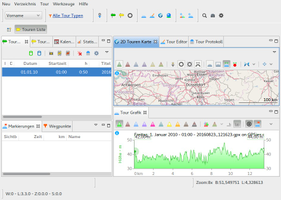

ANT
Dieser Artikel wurde für die folgenden Ubuntu-Versionen getestet:
Ubuntu 16.04 Xenial Xerus
Zum Verständnis dieses Artikels sind folgende Seiten hilfreich:
Archive entpacken, optional
Ein Programm ohne Menüeintrag starten, optional
Programme zum Menü hinzufügen, optional
Java installieren und benutzen, optional
Bearbeiten von Paketquellen, optional
Einen Editor öffnen, optional
 ANT+
ANT+  ist ein proprietärer Funknetzstandard mit geringer Reichweite, 64-Bit-Verschlüsselung und einem niedrigen Stromverbrauch. Durch diesen Vorteil kommt es unter anderem in diversen Sensoren aus dem Sportbereich zum Einsatz. Die mit den Geräten ermittelten Vitalwerte (Puls, Herzfrequenz), Umweltdaten (Windgeschwindigkeit, Temperatur... ) et cetera können mit einem ensprechenden Programm abgefragt und ausgewertet werden. Von der Software werden einge Geräte unterstützt. Zur Kommunikation mit Linux wird der ANT-Stick verwendet, der mit dem Gerät geliefert oder seperat erworben wurde.
ist ein proprietärer Funknetzstandard mit geringer Reichweite, 64-Bit-Verschlüsselung und einem niedrigen Stromverbrauch. Durch diesen Vorteil kommt es unter anderem in diversen Sensoren aus dem Sportbereich zum Einsatz. Die mit den Geräten ermittelten Vitalwerte (Puls, Herzfrequenz), Umweltdaten (Windgeschwindigkeit, Temperatur... ) et cetera können mit einem ensprechenden Programm abgefragt und ausgewertet werden. Von der Software werden einge Geräte unterstützt. Zur Kommunikation mit Linux wird der ANT-Stick verwendet, der mit dem Gerät geliefert oder seperat erworben wurde.
| Forerunner 205 |
openANT¶
openANT ist eine in Python geschriebene Bibliothek die es ermöglicht lesend und schreibend auf Daten von ANT-Geräten zuzugreifen.
Vorbereitung¶
Für die Verwendung muss man im Vorfeld die folgende Software installieren [1]:
git
python-setuptools
 mit apturl
mit apturl
Paketliste zum Kopieren:
sudo apt-get install git python-setuptools
sudo aptitude install git python-setuptools
Anschließend wird ein Arbeitsverzeichnis angelegt z.B. garmin. In dieses wechseln und die nachfolgend beschriebenen Installationen durchführen.
antfs¶
Im nächsten Schritt wird die Kommandozeile antfs-cli installiert nachdem der Quellcode heruntergeladen wurde [2] [3] [4]:
git clone git://github.com/Tigge/antfs-cli.git cd antfs-cli sudo python setup.py install cd ..
Bedienung¶
Das Programm wird mittels des folgenden Befehls aufgerufen [3]:
antfs-cli
Im folgenden Beispiel wurde der Fitness-Tracker vivofit verwendet um die drahtlose Verbindung über das ANT+-Protokoll herzustellen.
Driver available: [<class ant.base.driver.USB2Driver at 0x7fec820ed390>, <class ant.base.driver.USB3Driver at 0x7fec820ed3f8>]
- Using: ant.base.driver.USB3Driver
Request basic information...
Capabilities: array('B', [8, 8, 0, 186, 54, 0, 223, 4])
Starting system...
Key done...
Searching...
Authenticating with vívofit (xxxxxxxxxx)
- Pairing: OK
- Set time: OK
Downloading 1 file(s)
Downloading 1989-12-31_10-17-47_1_0.fit: [..............................] ETA: 0:00:00
Hinweis:
Die Dokumentation des Produkts unbedingt im Vorfeld lesen. Im Beispiel war es nötig den Sensor in den Sync-Modus zu bringen. xxxxxxxxxx ist die numerische ID des vivofit und die Ausgaben von 1989-12-31_xx-xx-xx können ignoriert werden.
Parameter¶
| antfs | |
| Parameter: | Beschreibung: |
--pair | Gerätekoppelung (erneut) erzwingen. |
-h | Hilfe |
-a | Als archiviert markierte Dateien werden übersprungen. |
--upload | Upload aktivieren |
--debug | Debug-Mudos aktivieren |
Ordner¶
Die Daten werden im Homeverzeichnis unter ~/.config/antfs-cli/ abgelegt. Für jedes verbundene Gerät wird ebenfalls ein eigener Unterordner angelegt.
| Struktur | |
| Ordner: | Beschreibung: |
| ~/.config/antfs-cli/logs | .log-Dateien. |
| ~/.config/antfs-cli/xxxxxxxxxx/activities/ | .fit-Dateien |
Udev¶
Bei einigen Geräten ist es nötig eine udev-Regel anzulegen um als normaler Benutzer auf diese Geräte zugreifen zu können. Hier mit Root-Rechten [4] die Datei /etc/udev/rules.d/51-garmin.rules erstellen [10] und die folgende Zeile einfügen:
SUBSYSTEM=="usb", ATTR{idVendor}=="0fcf", ATTR{idProduct}=="1008", MODE:="666"Hinweis:
In der Datei wird die USB-ID des jeweiligen Sticks verwendet. Alternativ ATTR{idProduct}=="1009" eintragen.
Nach einem Neustart des udev-Systems kann man das Gerät am Computer anschließen, und die Rechte sind entsprechend gesetzt.
|  | |
| My Tourbook | Turtle Sport |
Verarbeitung¶
Die gewonnenen Daten können mittel GPSBabel, Garmin Connect  oder anderen Programmen weiterverarbeitet werden:
oder anderen Programmen weiterverarbeitet werden:
My Tourbook¶
My Tourbook ist eine Software mit der sich per GPS-Geräten aufgezeichnete Strecken analysieren, bildlich darstellen, bearbeiten und ausdrucken lassen. Kartenmaterial von OpenStreetMap wird zur Darstellung genutzt. Das Programm setzt die Installation von Java [8] voraus.
Installation¶
Das Archiv von Projektseite  herunterladen und ins Homeverzeichnis entpacken [5]. In den neuen Ordner mytourbook wechseln und das Programm über
herunterladen und ins Homeverzeichnis entpacken [5]. In den neuen Ordner mytourbook wechseln und das Programm über mytourbook aufrufen [6]. Auf Wunsch einen Menüeintrag vornehmen [7].
Turtle Sport¶
Turtle Sport ist eine Software speziell für die Modelle der Serien ForeRunner und Edge aus dem Hause Garmins. Die Trainingsdaten können mit Hilfe des Programms grafisch dargestellt und nach verschiedenen Aspekten sortiert werden. Die Daten können mittels OpenStreetMap, Google Maps und Google Earth dargestellt werden.
Installation¶
Das aktuelle .deb-Paket von der Projektseite herunterladen und installieren [9]. Über turtlesport kann das Programm gestartet [6] werden.
Einrichtung¶
Über "Preferences" (Symbol) gelangt man ins Einstellungsmenü. Über "General → Deutsch" kann die Sprache auf Deutsch umgestellt werden.
Kompatible Geräte¶
Eine Liste kompatibler Geräte:
| Geräte | ||
| Gerät: | Beschreibung: | Erschienen: |
| Garmin Forerunner 60 | Fitness- / Laufuhr - Artikel nicht mehr lieferbar | 2009 |
| Garmin Forerunner 205 | GPS-Trainingsuhr - Artikel nicht mehr lieferbar | 2006 |
| Forerunner 310XT | Multisport-GPS-Gerät - Artikel nicht mehr lieferbar | 2009 |
| Garmin Forerunner 405CX | Sportuhr - Artikel nicht mehr lieferbar | 2009 |
| Garmin Forerunner 610 | GPS-Trainingsuhr - Artikel nicht mehr lieferbar | 2011 |
| Garmin Forerunner 910XT | GPS-Sportuhr - Artikel nicht mehr lieferbar | 2012 |
| Garmin FR70 | Multisport-GPS-Uhr - Artikel nicht mehr lieferbar | 2011 |
| Garmin Swim | Schwimmuhr | 2012 |
| Garmin vívofit | Fitness-Tracker | 2014 |
Auf den jeweiligen Projektseiten sind ggf. aktuelle Informationen verfügbar.
| USB-Sticks | |
| USB-ID: | Beschreibung: |
| 0fcf:1009 | Dynastream Innovations, Inc. ANTUSB-m Stick |
| 0fcf:1008 | Dynastream Innovations, Inc. Mini stick Suunto |
| Forerunner 610 |

{kind=link}
- Erstellt mit Inyoka
-
 2004 – 2017 ubuntuusers.de • Einige Rechte vorbehalten
2004 – 2017 ubuntuusers.de • Einige Rechte vorbehalten
Lizenz • Kontakt • Datenschutz • Impressum • Serverstatus -
Serverhousing gespendet von